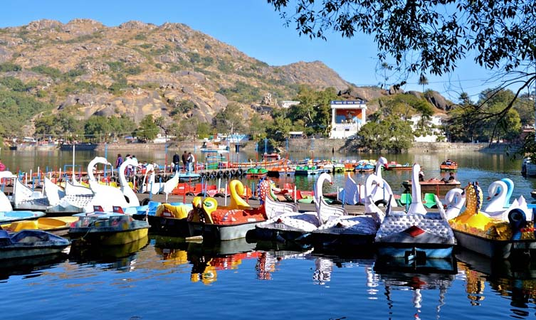
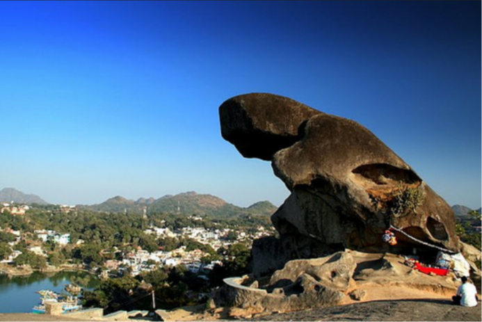
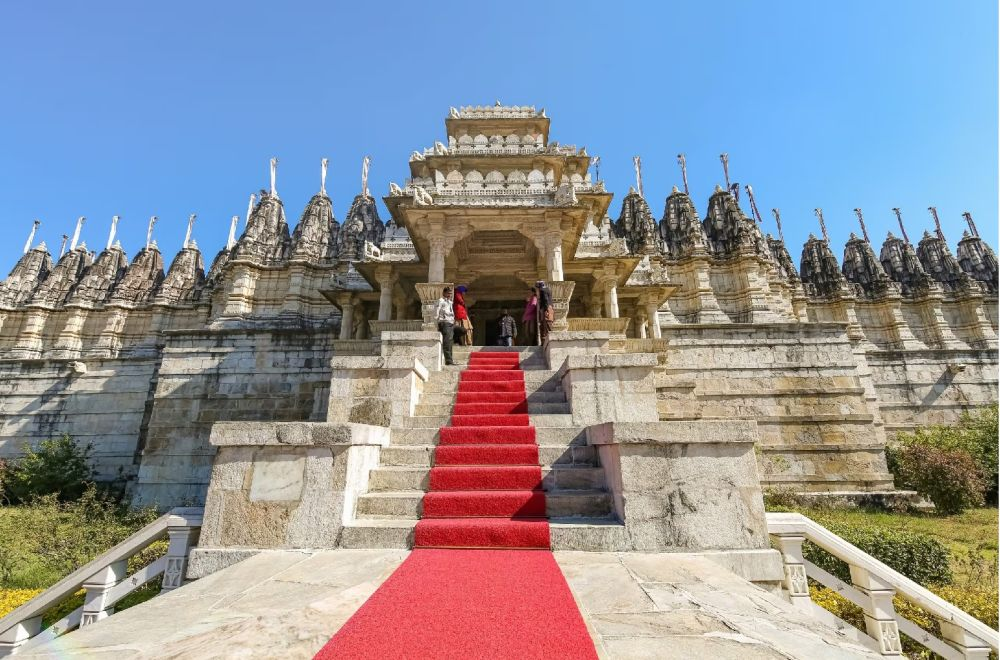

Nakki Lake: The Heart of Mount Abu
Nakki Lake is a serene and picturesque lake surrounded by hills, offering boating and scenic views.
Fun Fact:
~It’s believed to be dug out by the gods using their nails!
Things to Explore at Nakki Lake:
-
Boating:
Enjoy a peaceful boat ride on the lake, surrounded by lush greenery.
-
Sunset Point:
Witness breathtaking sunsets from the nearby Sunset Point.
-
Local Markets:
Explore local markets selling handicrafts and souvenirs.
-
Hilltop Views:
Climb nearby hills for panoramic views of the lake and surrounding landscape.
-
Wildlife Spotting:
Look out for various bird species around the lake area.
Why Visit Nakki Lake?
!Because it’s a perfect spot for relaxation, boating, and enjoying nature’s beauty!

Adhar Devi Temple: A Spiritual Retreat
Adhar Devi Temple is a revered temple dedicated to Goddess Durga, located in a cave.
Fun Fact:
~The temple is carved out of a single rock and requires climbing 365 steps!
Things to Explore at Adhar Devi Temple:
-
Spiritual Experience:
Experience the spiritual ambiance and tranquility of the temple.
-
Scenic Views:
Enjoy panoramic views of Mount Abu from the temple premises.
-
Local Culture:
Interact with locals and learn about their traditions and beliefs.
-
Photography:
Capture stunning photographs of the temple and surrounding hills.
-
Hiking Trails:
Explore nearby hiking trails for an adventurous experience.
Why Visit Adhar Devi Temple?
!Because it’s not just a spiritual journey but also an adventure with breathtaking views!

Toad Rock: Nature’s Marvel
Toad Rock is a unique rock formation resembling a toad, offering panoramic views of the surrounding hills.
Fun Fact:
~It’s a popular spot for photography and hiking enthusiasts!
Things to Explore at Toad Rock:
-
Hiking:
Embark on a short hike to reach the top of Toad Rock for stunning views.
-
Photography:
Capture the unique rock formation and surrounding landscapes.
-
Picnic Spot:
Enjoy a picnic with family or friends amidst nature.
-
Wildlife Watching:
Look out for various bird species and local wildlife.
-
Sunset Views:
Experience breathtaking sunsets from the top of Toad Rock.
Why Visit Toad Rock?
!Because it’s a perfect blend of adventure, nature, and stunning views!

Dilwara Temples: Architectural Marvels
Dilwara Temples are a group of ancient Jain temples known for their intricate carvings and architecture.
Fun Fact:
~These temples date back to the 11th century and are a UNESCO World Heritage Site!
Things to Explore at Dilwara Temples:
-
Architectural Wonders:
Admire the intricate carvings and architectural brilliance of the temples.
-
Spiritual Experience:
Experience the serene ambiance and spiritual significance of the temples.
-
Historical Insights:
Learn about the history and significance of Jainism in the region.
-
Photography:
Capture stunning photographs of the temples and their surroundings.
-
Local Culture:
Interact with locals and learn about their traditions and beliefs.
Why Visit Dilwara Temples?
!Because it’s a journey through time, exploring ancient architecture and spirituality!
Guru Shikhar: The Pinnacle of Mount Abu
Guru Shikhar is the highest peak in the Aravalli Range, offering breathtaking views and a serene atmosphere.
Fun Fact:
~It’s named after Guru Dattatreya, a revered Hindu deity!
Things to Explore at Guru Shikhar:
-
Hiking:
Embark on a hike to the peak for panoramic views of the surrounding landscape.
-
Temple Visit:
Visit the Dattatreya Temple located at the peak.
-
Photography:
Capture stunning photographs of the sunrise and sunset from the peak.
-
Wildlife Spotting:
Look out for various bird species and local wildlife.
-
Picnic Spot:
Enjoy a picnic amidst nature with family or friends.
Why Visit Guru Shikhar?
!Because it’s a perfect blend of adventure, spirituality, and breathtaking views!